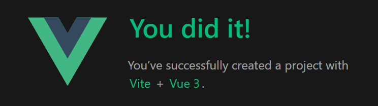
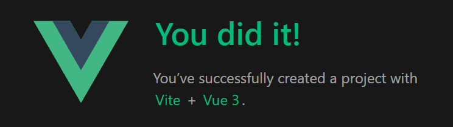

Практическая 4.2
Особенности выполнения работы
Некоторые предоставленные файлы имели несколько синтаксических ошибок, поэтому в ряде случаев их приходилось исправлять по ходу выполнения. Также ресурс не был доступен по предоставленному адресу, возможно это ошибка с моей стороны:

Список воинов
<template>
<div class="warrior" v-for="warrior in warriors"> <!-- v-for - директива для отображения списка элементов на основе массива. -->
<div><strong>Имя:</strong> {{ warrior.name }}</div>
<div><strong>Расса:</strong> {{ warrior.race }}</div>
</div>
</template>
<script>
export default {
props: { // «Props» -- это специальное ключевое слово, обозначающее свойства . Его можно зарегистрировать в дочернем компоненте для передачи данных от родительского компонента к одному из его дочерних компонентов.
warriors: {
type: Array,
required: true
}
}
}
</script>
<style scoped>
</style>
Форма для воина
<template>
<form @submit.prevent> <!-- @submit.prevent позволяет остановить перезагрузку страницы после нажатия кнопки -->
<h1>Создание война</h1>
<input
v-model="warrior.name"
class="input"
type="text"
placeholder="Имя"> <!-- Вызывает форму, при нажатии кнопки "Создать", "warrior.name" получит значение из формы -->
<input
v-model="warrior.race"
class="input"
type="text"
placeholder="Раса">
<button class="btn" v-on:click="createWarrior">Cоздать</button> <!-- Нажатие кнопки "Создать" вызывает метод "createWarrior" и записывает данные в объект "warrior" -->
</form>
</template>
<script>
import axios from "axios";
export default {
name: "WarriorForm",
data () {
return {
warrior: {
name: '',
race: ''
}
}
},
methods: {
createWarrior() {
axios.post('http://62.109.28.95:8890/warrior/create1', {
race: this.warrior.race,
name: this.warrior.name,
});
}
}
}
</script>
<style scoped>
</style>
View для воинов
<template>
<div class="app">
<h1>Портал информации о войнах в онлайн РПГ</h1>
<button v-on:click="fetchWarriors">Получить список войнов</button> <!-- Кнопка вызывает функцию получения списка данных (функция fetchWarriors объявлена в блоке "methods") -->
<warrior-form/> <!-- Встраивание компонента формы -->
<warrior-list
v-bind:warriors="warriors"
/> <!-- Встраивание компонента вызывающего список объектов. v-bind - директива служит для так называемой data binding -- привязки данных (данные объявляются в блоке данных data() (см. код ниже)). -->
</div>
</template>
<script>
import WarriorForm from "@/components/WarriorForm.vue";
import WarriorList from "@/components/WarriorList.vue";
import axios from "axios";
export default {
components: {
WarriorForm, WarriorList
},
data() { // data - это функция, которая возвращает объект с данными
return {
warriors: [], // Массив данных (передается в компонент WarriorList, получает данные средствами функции fetchWarriors
}
},
methods: { // methods. Это объект, который содержит список Javascript функций, которые должны выполняться в зависимости от того, какие действия производит пользователь.
async fetchWarriors () { // асинхронная функция для получения данных
try {
const response = await axios.get('http://62.109.28.95:8890/warriors/list/') // Выполнение GET-запроса Backend-серверу. Запрос вернет JSON.
console.log(response.data.results)
this.warriors = response.data.results // Массив данных warriors из блока(функции) data() получает значением результат только-что выполненного запроса
} catch (e) {
alert('Ошибка')
}
}
},
mounted() {
this.fetchWarriors() // Vue вызывает хук mount(), когда компонент добавляется в DOM. В данном примере это позволяет вызвать fetchWarriors для получения списка воинов до отрисовки страницы в браузере, благодаря этому страница загружается с уже полученными ранее данными.
}
}
</script>
Результат
 
